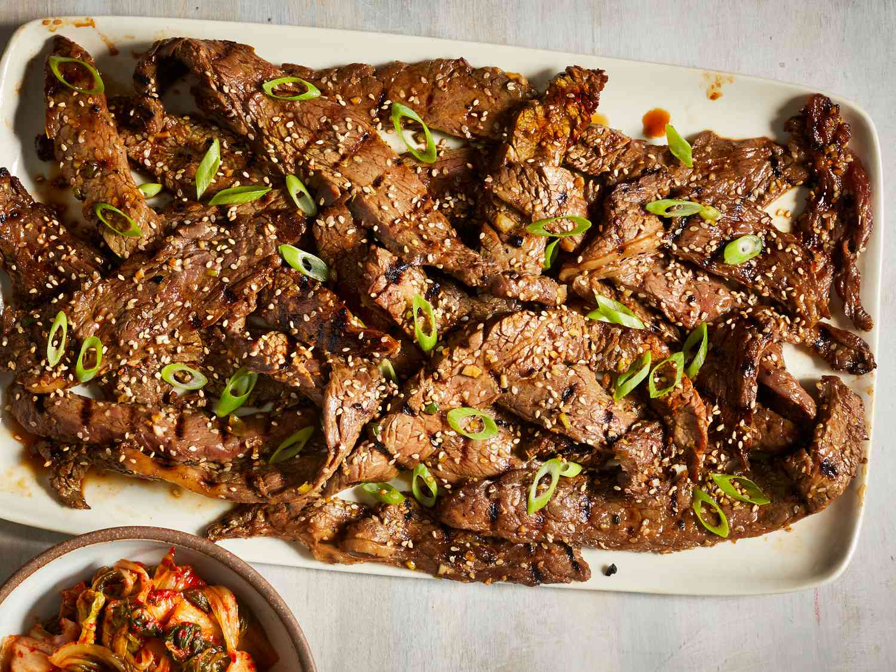

Bulgogi Recipe

Description
As described by
Damn Delicious:
Marinated beef dish with an attractive aroma to fill up the whole house.
Often served with perilla leaves, rice, and ssamjang (Korean BBQ dipping sauce)
Please note: the recipe and ingredients are also taken from RecipeTinEats' article;
this content is not original
Ingredients
- Boneless rib eye steak
- Pear
- Reduced sodium soy sauce
- Brown sugar
- Toasted sesame oil
- Garlic
- Freshly grated ginger
- Gochujang, Korean red pepper paste
- Vegetable oil
- Green onions
- Toasted sesame seeds
Steps
- Wrap steak in plastic wrap, and place in the freezer for 30 minutes.
Unwrap and slice across the grain into 1/4-inch thick slices.
- In a medium bowl, combine pear, soy sauce, brown sugar, sesame oil,
garlic, ginger and gochujang. In a gallon size Ziploc bag, combine
soy sauce mixture and steak; marinate for at least 2 hours to
overnight, turning the bag occasionally.
- Heat 1 tablespoon vegetable oil in a cast iron grill pan over
medium-high heat.* Working in batches, add steak to the grill
pan in a single layer and cook, flipping once, until charred
and cooked through, about 2-3 minutes per side. Repeat with
remaining 1 tablespoon vegetable oil and steak.
- Serve immediately, garnished with green onions and sesame seeds, if desired.